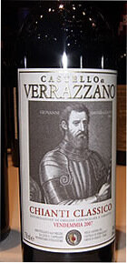
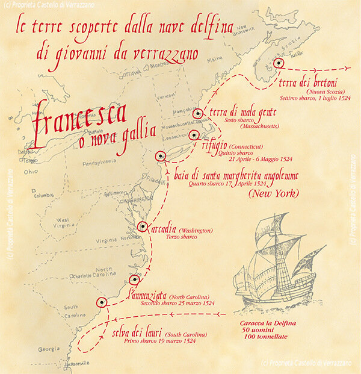
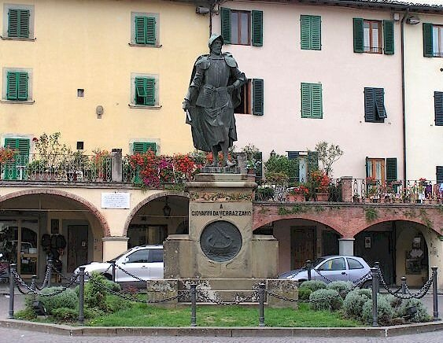
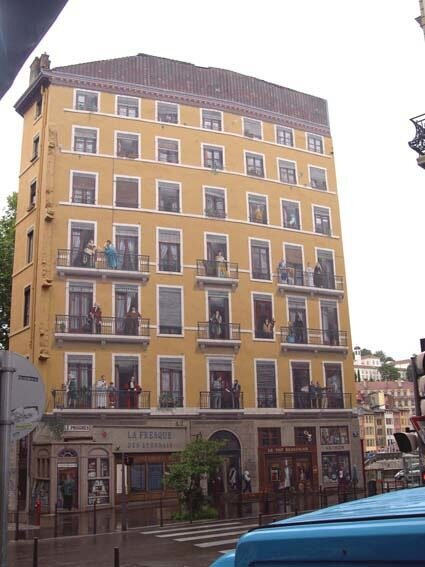

Это не реклама. Какое отношение имеет бутылка кьянти урожая 2007 года к нашей теме увидим позже.
Тот же самый экономический и социальный гнет, который вел многих людей во Франции XVI века к добровольному поступлению на службу в качестве солдат, вел других к еще менее привлекательной службе добровольных гребцов – bonnevoglies.
Впервые итальянский термин, от которого произошло название гребцов-добровольцев галер, мы встречаем в 1519 г. в Генуэзских Анналах (liv. VI) , где Агостино Густиниано говорит о галерах «forzate» и галерах «di bona voglia»: на первых гребцами были невольники, на вторых – добровольцы. В трактате начала XVI века Les Faits de la marine et navigaiges, написанном известным мореплавателем Антуаном де Конфланом (Antoine de Conflans) и впервые опубликованном Огюстеном Жалем в Annales Maritimes et Coloniales в 1842 г., говорится: « Aussi pourrez veoir qu'il fault » (ce qu'il faut) « et est necessaire à armer une gallée de Bonne voille ou par force» , имея в виду обеспечение галеры «добровольными гребцами или невольниками».
Написали мы «известный мореплаватель», но вынуждены будем сделать небольшую оговорку. Дело в том, что на роль нашего автора имеется как минимум два претендента. Мне удалось найти генеалогию рода де Конфлан (как ветвь известного рода de Thourotte). Так вот, на роль автора нашего трактата, который написан между 1515 и 1520 годом, может претендовать лейтенант-егермейстер Франции (Lieutenant de la Vénerie de France), который умер в 1546 году и другой Антуан де Конфлан, его племянник. О.Жаль, опубликовавший трактат, смешал отрывочные данные их биографий в одну и в конце концов вынужден был капитулировать, не сумев свести концы с концами. Но это были два человека. Второй, который, конечно, подходит больше для автора фактически первого во Франции трактата по морскому искусству, был гидрографом, автором лоции 1522 года. Он командовал бригантэном, затем нефом, и наконец управлял знаменитым французским кораблем La Dauphine , на котором была совершена первая французская экспедиция к берегам Америки.
Это, конечно, off-top, но не могу не сказать несколько слов об этой экспедиции и ее начальнике (официально признанном) Джованни да Верраццано.
До 1524 года Франция не принимала участия в колонизации и воздерживалась от заокеанских экспедиций. Однако во время правления короля Франциска I положение изменилось. Наблюдая, как возросло могущество соседней Испании благодаря новым открытиям, король решил снарядить в 1524 году первую французскую экспедицию в Новый Свет под начальством состоявшего у него на службе флорентинца Джованни да Верраццано.
Детали биографии Верраццано нам не известны. Все что мы знаем о его карьере – это скудные сведения из итальянского перевода докладной записки Верраццано Франциску I. Далее судьба этого документа сложилась следующим образом.
В 1550-1559 г. венецианец Рамузио (Giambattista Ramusio, 1485-1557), бывший одно время на дипломатической службе Республики, занимавший в том числе пост посла Венеции во Франции, а в дальнейшем секретарь Сената и даже Совета десяти, собрал многочисленные рассказы о путешествиях в одну монументальную книгу Delle navigationi e viaggi, дополнив их описаниями великих морских подвигов Республики, что обеспечило книге быстрый и всеобщий успех. В этом собрании оказалась и докладная записка Верраццано. Из нее мы узнаем следующее.
Отправившись с четырьмя кораблями «совершать открытия за океаном», Верраццано был застигнут бурей, которая заставила его искать укрытия в Бретани. Оттуда он спустился к берегам Испании и навязал бой нескольким испанским судам. Неизвестно, каков был исход этого набега, но в дальнейшем мы застаем Верраццано, 17 января 1524 года, только с одним кораблем La Dauphine при отплытии от маленького необитаемого острова, лежащего по соседству с Мадейрой. Он пустился в океан с экипажем в пятьдесят человек, запасшись продовольствием и снаряжением на восемь месяцев.
8 или 9 марта Верраццано увидел под 34° северной широты неизвестную землю. «Сначала эта страна, — пишет он в докладной записке королю, — показалась нам очень пустынной, но приблизившись к берегу, мы увидели большие костры. Теперь оставалось только выбрать место для стоянки, чтобы ознакомиться со страной, но пришлось проплыть еще не меньше пятидесяти лье вдоль берега, круто уходившего к югу, прежде чем было найдено место, удобное для высадки».
Местность, где высадились французы, была, по-видимому, той частью Соединенных Штатов, которая известна сейчас под названием Северной Каролины.
После первой остановки в продолжение всего марта 1524 года путешественники плыли вдоль берега, казавшегося густо населенным. Недостаток воды заставлял их неоднократно высаживаться, и всюду они встречали туземцев, не проявлявших никаких воинственных намерений и охотно отдававших все, что они имели, за зеркальца, бубенчики и ножи. Верраццано исследовал североамериканское побережье на протяжении семисот лье. Он назвал эти земли Francesca в честь короля Франциска I. Подняться еще севернее он уже не мог, так как подошли к концу съестные припасы. Повернув обратно, Верраццано благополучно прибыл во Францию и в июле 1524 года высадился в Дьеппе. Вот как выглядит карта этого путешествия Верраццано:

Краткое изложение докладной записки Верраццано королю приводит Жюль Верн в своей трехтомной «Истории великих путешествий» (т.1. с.428-432). Он пишет в заключение:
«Некоторые историки уверяют, будто Верраццано попал в плен к дикарям у берегов Лабрадора и был ими съеден. Этот рассказ — очевидная нелепость, так как Верраццано послал из Дьеппа отчет Франциску I о своем путешествии, содержание которого мы здесь привели. Да, кроме того, индейцы этих стран никогда не были людоедами! Мы никак не могли доискаться, на основании каких источников другие авторы выдвигают версию, будто Верраццано попал в руки к испанцам, которые привезли его в Испанию и там повесили. (Джованни да Верраццано был известен испанцам как дерзкий пират Хуан Флорин, перехвативший испанские корабли, шедшие из Мексики с сокровищами Монтесумы. По свидетельству Берналя Диаса, в 1527 году Хуан Флорин был взят в плен на море и повешен испанцами в Севилье. В те времена важнейшие географические открытия нередко совершались пиратскими экспедициями – Примечание Ж.Верна). Гораздо добросовестнее будет сознаться, что мы ничего не знаем ни о дальнейшей судьбе Верраццано, ни о том, как отнеслись в придворных кругах Франции к его путешествию. Не исключена возможность, что какой-нибудь ученый найдет в архивах новые документы об экспедиции Верраццано, но пока что мы знаем о нем только то, что сообщается в сборнике Рамузио.»
За годы, прошедшие после выхода в свет книги Ж.Верна в архивах действительно были найдены новые документы, но полной определенности в картину событий они не внесли. Более того, в некотором отношении они ее запутали еще больше. Стало известно еще о двух путешествиях Верраццано. Первое из них состоялось в 1527 году к берегам Бразилии. Второе – и последнее – в 1528 году – к землям Карибского бассейна. На борту корабля, помимо самого Джованни да Верраццано находился его брат Джироламо, известный картограф. При высадке группы моряков во главе с Джованни да Верраццано для исследования острова ( предположительно Гваделупы) на них напала группа воинов из местного племени и на глазах брата Джованни расчленила их на части, поджарила на огне и съела. Останки путешественника были доставлены в Италию, где и захоронены. Итальянцы чтут память своего соотечественника. Ему установлен памятник на родине, а также в Нью-Йорке, где итальянская колония истово борется за право считать Верраццано первым исследователем гавани Нью-Йорка.

А родом Верраццано из Val di Greve, ныне Greve in Chianti к югу от Флоренции. Фабриканты кьянти не преминули воспользоваться именем знаменитого предка и назвали им сорт местного вина. Вот и причина, почему его бутылка помещена в начале данного поста. Имя флорентинца присвоено мостам, судам и кораблям итальянского флота.
А что же французы? Особой славой и известностью во Франции Джованни да Верраццано (или как его там зовут Jean de Verrazane) не пользуется. Хотя это не мешает французским исследователям утверждать, что Jean de Verrazane жил не в Италии, а в Лионе, хотя и в итальянской семье. Едва ли не единственным изобржением Верраццано во Франции является фреска на стене дома на углу набережной Сант-Винсента и улицы Монтиньер в Лионе. На стене этого дома площадью 800 квадратных метров лионские художники изобразили самых известных уроженцев своего города. Среди знаменитых уроженцев Лиона, соседей Верраццано по дому – братья Люмьер, Антуан де Сент-Экзюпери и другие.

А в последнее время предпринимаются попытки вообще дезавуировать роль Верраццано в известном путешествии. На одном из сайтов , посвященном истории Дьеппа, опубликована расписка капитана корабля La Dauphine Антуана де Конфлана (того самого, о котором мы вели речь выше) в получении жалованья за период с 1 января по 30 июня 1524 года. (правда с задержкой на полгода). На сайте утверждается, что Верраццано скорее всего был просто штурманом, т.к. занять место капитана на корабле, принадлежащем французскому королю, он вряд ли мог.
Бог с ними, с французами и итальянцами, пусть разбираются между собой сами. Мы же, исчерпав лимит этого поста, вернемся к гребцам французских галер в следующий раз.